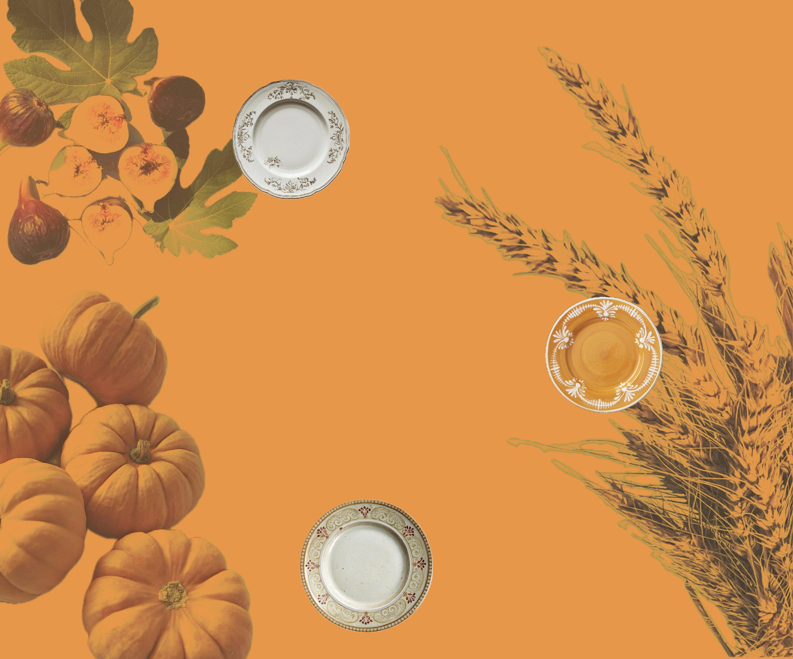

03 / Harvest
Thanksgiving
Gratitude & gathering
- WHERE
- United States
- WHEN
- Fourth Thursday in November
At the Same Table.
Thanksgiving or Thanksgiving Day is a national holiday celebrated on various dates in October and November in the United States, Canada, Saint Lucia, and Liberia. It is also observed in the Australian territory of Norfolk Island. It began as a day of giving thanks for the blessings of the harvest and of the preceding year. Various similarly named harvest festival holidays occur throughout the world during autumn. Although Thanksgiving has historical roots in religious and cultural traditions, it has long been celebrated as a secular holiday as well.

Explore the illustration · hover over the items, click to read
A cornucopia overflowing with fruits and vegetables symbolizes abundance and the autumn harvest.
Passing dishes around the table turns a meal into an act of connection and gratitude.
Roast turkey is a traditional centerpiece of Thanksgiving dinner, bringing family and friends together around the table.